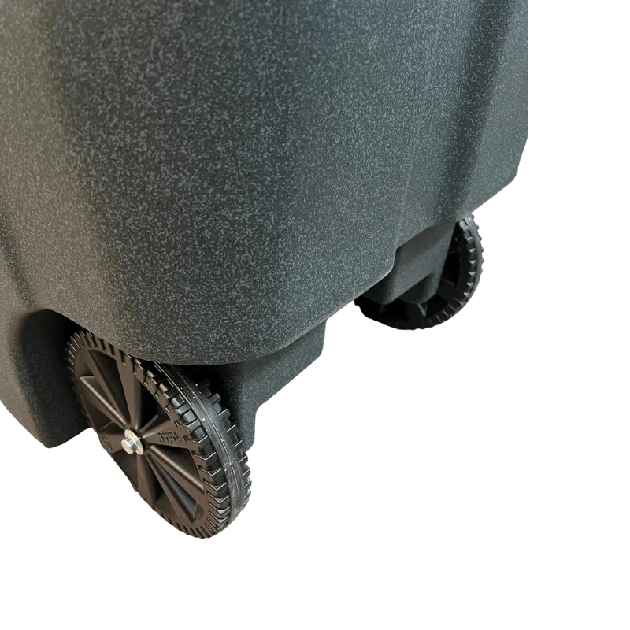
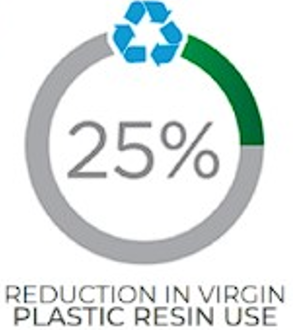
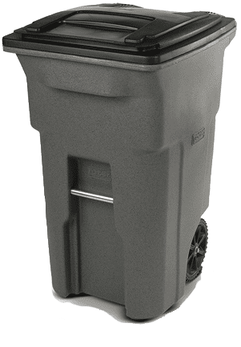
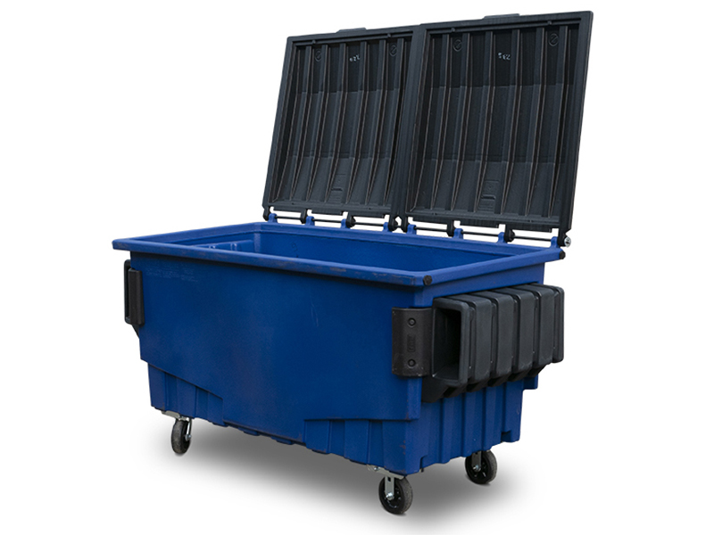
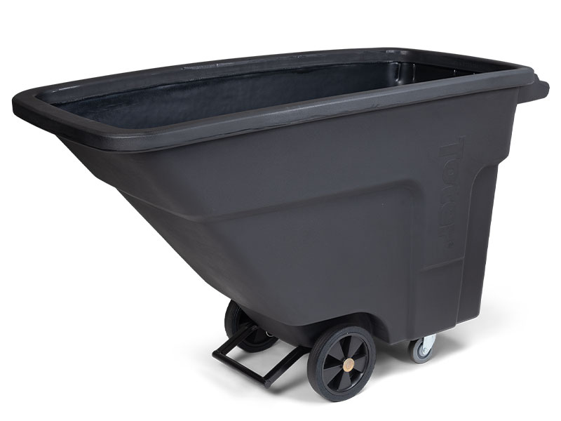
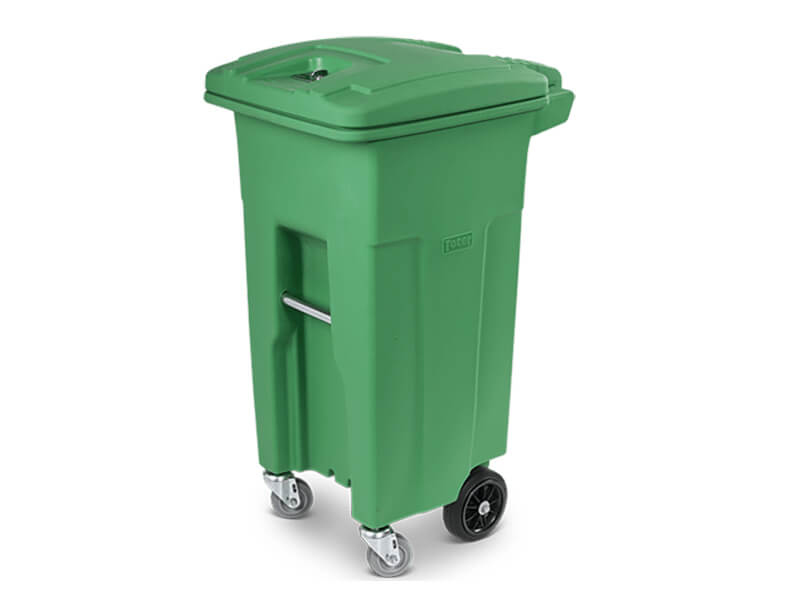

   Sustainable Waste Management Solutions
Toter provides high-quality carts, containers, and equipment for efficient and eco-friendly waste management.
Learn MoreFeatures
Discover the features that make Toter the leading provider of sustainable waste management solutions.
Our Products



Explore our wide range of trash cans, dumpsters, and other waste management equipment.